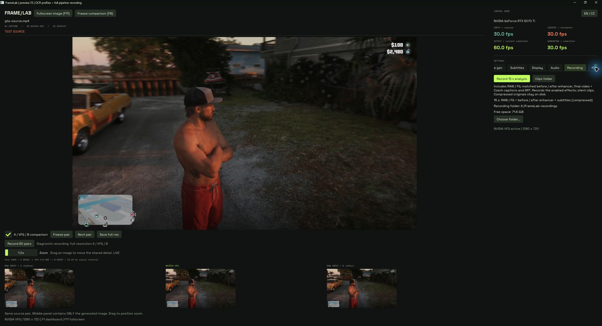

Nahrávání a debug — preview.15

Nahrávání před/po a titulků
V Recording / Nahrávání vyberte složku a Nahrát 15 s pro analýzu. Cesta se uloží. Pro 1440p se všemi efekty doporučujeme alespoň 36 GiB volného místa; spotřeba záleží na materiálu.
Snímky se bezeztrátově komprimují do omezené RAM, poté ukládají a exportují. Počkejte na dokončení. Nedostatek paměti/disku nebo pomalé čtení GPU může ukončit záznam dřív; částečný záznam je označený a vyexportuje se úplný úsek.
Výstupy: RAW/generované přehledy, synchronizované před/po/finál, trojité porovnání, subtitles.cs.srt, texty, časování a nastavení s ID. Finál obsahuje skutečný titulek včetně zpoždění. Plocha ani zvuk se nenahrávají. Formát a limity.
Debug a měření
Záložku najdete šipkami v řadě nastavení. Přečtěte upozornění a zapněte log; F9 jej přepíná. Ukládá časová razítka, CPU/GPU, FPS, fronty, texty OCR/překladů a nastavení až do vypnutí. Před sdílením zkontrolujte soukromé texty.
Nově se ukládá zaměření/fullscreen, velikost okna, čekání na prezentaci a prodlevy smyčky. Význam měření.